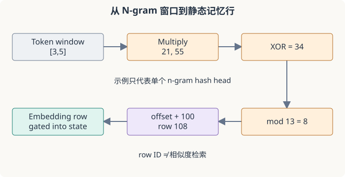
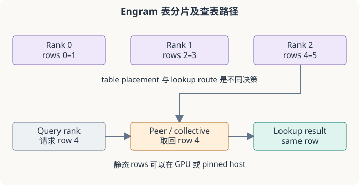

第 42 章 · SGLang 生产系统
Engram：条件记忆表、N-gram Hash 与分布式 Lookup
大规模静态记忆如何从 token 历史得到 row IDs，并在 GPU/Host/Peer 间查表？
大规模静态记忆如何从 token 历史得到 row IDs，并在 GPU/Host/Peer 间查表？ 从具体反例出发，连接算法、工程接口与测量边界。
1. 静态知识检索不同于动态缓存
Engram 通过局部 token 历史决定查哪些训练得到的静态 embedding rows，再将其 gated into hidden state。与 KV Cache 不同，表不是每个请求生成的历史 attention 状态；与 MoE 不同，检索的是 table row 而不是执行一整组 expert GEMM。官方文档在该快照描述 DeepSeek-V4.1 的 Engram layers，不能泛化为所有模型。
2. 从 token window 到 hash row
compute_engram_hash_ids 接受 tokens[T,n]、blocked[T,n]、token map、multipliers、primes、offsets。第0列为当前 token，第s列为第s个前驱；blocked 表示跨出序列起点。压缩 token 后乘以对应 multiplier，逐步 XOR 构造不同 n-gram，再对各 head 的 prime 取模加 offset。输出为 [T, n_engram_layers, (n−1)×n_heads]。

3. Hash 是地址选择，不是语义相似度搜索
教学例：token compressed IDs [3,5]，multipliers [7,11]，prime=13，offset=100。3×7=21，5×11=55，XOR=34，34 mod13=8，因此 row108。实际各 layer/head 有不同 primes、offsets 和布局；hash collisions 可能发生，不能保证一对一。
4. 请求历史与查表正确性
短窗口必须为序列边界补 pad，不可读到另一请求历史；prefill/decode/chunked execution 需要保持窗口语义。EngramHasher 含 history row 管理与 commit_after_verify，推测 token 未接受前不能无条件提交到已确认历史。table row 返回后由模型层融合；本文不把 teaching hash 等同于真实 DeepSeek checkpoint。
5. 三条存储轴与容量
placement: gpu 或 pinned cpu；replication: none、per_node、group_shards；lookup: auto、peer_read、all_reduce、reduce_scatter、all_to_all 等受配置约束。若一张教学表 8 GiB、4 ranks 均匀分片，则约2 GiB/rank；replication 改变总副本数，host placement 释放 HBM 却增加 host 带宽压力。真实还需量化 scales、对齐与 staging。

6. 同一行如何从不同 rank 返回
peer_read 在合适 GPU peer fabric 上直接读 owner row；DP attention 下 all_reduce 可让 owner 输出其拥有的 rows、非 owner 输出零，再合并；reduce_scatter 只交付本 rank 需要的 slice；all_to_all 按 hash columns 组织交换，要求列数与 TP divisibility 等限制。不能把文档中的 byte ratio 推广到任意 topology。group_shards 跨服务器使用共享目录协调，文档要求 CUDA fabric 与整个 group 的生命周期一致，且不支持 PP。
7. 部署风险与评估
--engram-config 仅适用该文档所述 DeepSeek-V4.1；检查 startup log 的实际 resolved lookup。比较 HBM、host RAM、row lookup latency、peer traffic、TTFT/ITL 和实际读带宽。CPU pinned table 不是免费内存，也不能把静态 table 当作可直接跨不同 model revision 复用的 KV。
8. 交互：选择工作负载与反例
Engram Memory 教学实验
GPU 分片：8 GiB table / 4 ranks ≈2 GiB/rank，peer access 取决于互联。
Host 分片：同样的 rows 放 pinned host，减少 HBM 驻留，可能增加 host read latency。
每节点复制：每节点保存完整 table，共 N 个节点则总容量约 N×8 GiB；节点内共享不等于跨节点共享。
教学模型仅验证机制与反例，不代表真实 GPU benchmark。
9. CPU 最小实验
下载 engram_lookup.py，使用标准库运行。源文件包含确定性输出及正反例断言。
python3 examples/engram_lookup.py实验是教学抽象，不运行真实 GPU serving、collectives 或网络传输。
10. 源码阅读路线与证据
固定上游快照 b323e8e6e3aacfe606b11a2ef51ae73bc8b283a7，区分当前实现、工程建议及教学推导。
- Engram Tables / Usage：Engram stores static tables and exposes placement, replication and lookup policies via --engram-config.
- compute_engram_hash_ids：Compressed token windows, multipliers, running XOR, modulus and offsets produce row IDs.
- EngramHasher：Hasher maintains request history and computes hash IDs.
- How auto picks / Requirements and limits：Peer reads and collectives have topology and layout prerequisites; group_shards has distinct deployment restrictions.
- _PeerShards / lookup：Peer shard views and row lookup are separated from hash generation.